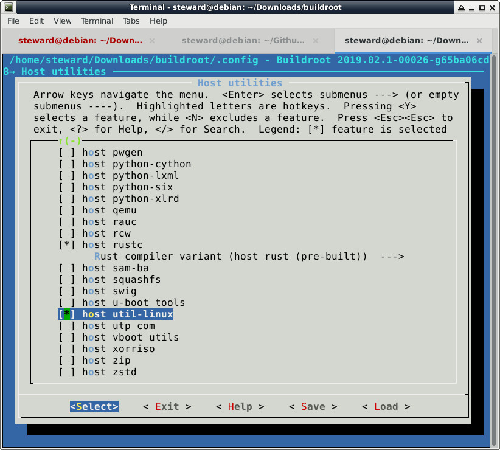

參考資訊：
https://www.claudiokuenzler.com/blog/611/installing-cmake-3.4.1-ubuntu-14.04-trusty-using-alternatives
安裝cmake 3.14(不然會有add_compile_definitions編譯問題)
$ cd $ wget https://github.com/Kitware/CMake/releases/download/v3.14.4/cmake-3.14.4.tar.gz $ tar -xvzf cmake-3.14.4.tar.gz $ cd cmake-3.14.4 $ ./configure $ make $ sudo make install $ sudo update-alternatives --install /usr/bin/cmake cmake /usr/local/bin/cmake 1 --force
編譯Buildroot
$ cd $ git clone https://github.com/OpenDingux/buildroot $ cd buildroot $ make od_rs90_defconfig $ make menuconfig
支援swapon指令

$ vim board/opendingux/rs90/busybox.config
646 CONFIG_MKSWAP=y
647 CONFIG_FEATURE_MKSWAP_UUID=y
678 CONFIG_SWAPON=y
679 CONFIG_FEATURE_SWAPON_DISCARD=y
680 CONFIG_FEATURE_SWAPON_PRI=y
681 CONFIG_SWAPOFF=y
682 CONFIG_FEATURE_SWAPONOFF_LABEL=y
715 CONFIG_FEATURE_VOLUMEID_LINUXSWAP=y
$ wget https://gitlab.freedesktop.org/libevdev/evtest/-/archive/evtest-1.33/evtest-evtest-1.33.tar.gz
$ mkdir -p dl/evtest/
$ mv evtest-evtest-1.33.tar.gz dl/evtest/evtest-1.33.tar.gz
$ vim package/evtest/evtest.hash
sha256 e8396717d0d2907d6927dd8ba479cea0178cf0d4cb740aa3072eecf777370741 evtest-1.33.tar.gz
$ make
P.S. toolchain: /opt/rs90-toolchain, rootfs: output/images/rootfs.squashfs